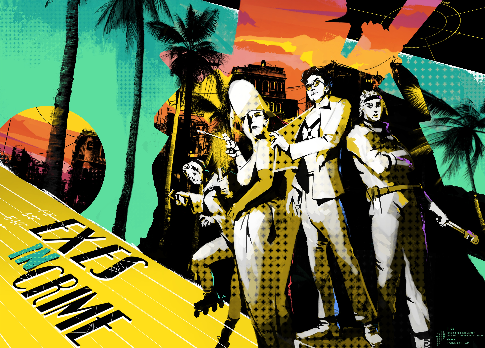

Exes in Crime
 Github Trailer
'Exes in Crime' was likely the most ambitious project I worked on during my studies.
Created as my 6th semester project in 2021, the vision was a turn based strategy game with a variety of game systems, like a card game system introducing a new flavour of randomness and strategic planning to the genre.
At the same time we aimed for a extensive story with big cast of diverse and queer characters.
If you want to meet Vin and his exes in crime have a look at the Game Trailer !
Otherwise I want to use this page to talk a bit about the challenges and achievements I encountered as the programmer and producer of this project.
Feel free to watch the following video, which is a short showreel of the different things I worked on. Further below I talk a bit abnout the two big tools I created for our game designer and artists, which were a big learning focus for me:
Showreel
Editor Tools
Map Editor

The main part of the tool is that the prefabs of the tiles snap perfectly to the ground and wall grid and are directly registered in the map data. The map data is pretty much just a dictionary that contains a reference towards the prefab of the tile in the resource folder and its coordinates on the map. From this data the mapmanager can regenerate the map, which is the base skeleton of each level. Upon that, the level designer can put more gameobjects like enemies, safes and other interactables. These additional probs are saved in the scene of the level.
We realized relatively early that by instanciating for each tile it's own prefab the performance dropped heavily, since each mesh of the prefab was treated individually in the render queue. Luckily the strucutre of how we saved the map data gave us options to manipulate how the visuals of the objects get generated. Instead of instancing each prefab, the prefabs get added to a special list marking the meshes of the needed prefab to be instanced rendered. Everytime the same prefab would pop up in the map, it would just add a counter to it's meshes that are already in the list and give the coordinates the copy should be rendered. Enhancing performance significantly.
Dialog Editor